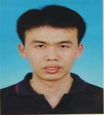

|
|||

王赵武

王赵武，男，理学博士。研究方向：凝聚态计算物理。
工作和学习经历:
2003年毕业于中国地质大学数理系获学士学位。2007年毕业于华中科技大学物理学院获理学硕士学位。
2011年毕业于南京大学物理学院获理学博士学位。
2011年进入河南科技大学物理工程学院工作。
2015-2016年在中国科学技术大学访学。
教学工作:
主讲课程有：《物理化学》，《热力学·统计物理》，《群论》；普通物理实验和近代物理实验等。科研工作:
主持国家青年基金一项，参与国家级项目6项，主持河南省高等学校重点科研项目1项，参编教材1部，在NatureCommunication, Advanced Materials, NanoEnergy, ACS Applied Materials & Interface, Physical Review B, Journal of Physical Chemistry Letters等国际知名期刊上发表论文20余篇。论文(#共同第一作者,*通讯作者)：
- Zhaowu Wang, Xijun Wang, Edward Sharman, Xiyu Li, Li Yang, Guozhen Zhang, Jun Jiang*, Tuning Phase Transitions in Metal Oxides by Hydrogen-doping: A First-principle Study, J. Phys. Chem. Lett., 11, 1075−1080, 2020.
- Liyan Xie, Qing Zhu, Guozhen Zhang, Ke Ye, Chongwen Zou, Oleg V. Prezhdo, Zhaowu Wang, Yi Luo, Jun Jiang*, Tunable Hydrogen Doping of Metal Oxide Semiconductors with Acid-Metal Treatment at Ambient Condition, J. Am. Chem. Soc.,142, 4136-4140, 2020.
- Bowen Li#, Liyan Xie#, Zhaowu Wang, Shi Chen, Hui Ren, Yuliang Chen, Chengming Wang, Guobin Zhang, Jun Jiang*, Chongwen Zou*, Electron-proton co-doping induced metal-insulator transition in VO2 film via surface self-assembled L-ascorbic acid molecules, Angew. Chem. Int. Ed., 58, 13711-13716, 2019.
- Shi. Chen#, Zhaowu Wang#, Hui Ren, Yuliang Chen, Wensheng Yan, Chengming Wang, Bowen Li, Jun Jiang*, Chongwen Zou*, Gate-controlled VO2 phase transition for high-performance smart window, Science Advances, 5, eaav6815, 2019.
- Xuening Wang, Liang Wu, Zhaowu Wang*, Hengyi Wu, Xuemei Zhou, Hongyu Ma, Huizhou Zhong, Zhuo Xing, Guangxu Cai, Changzhong Jiang, Feng Ren*, C/N Double Vacancy Synergetic Enhanced Photoelectrochemical Performance of g-C3N4 Through Controlled He+ Ion Irradiation, Solar RRL, 3, 1800298, 2019
- Yuliang Chen#, Zhaowu Wang#, Shi Chen, Hui Ren, Liangxin Wang, Guobin Zhang, Yalin Lu, Jun Jiang, Chongwen Zou, Yi Luo, Non-catalytic hydrogenation of VO2 in acid solution, Nature Communications, 9, 818, 2018.
- Hengyi Wu, Zhaowu Wang, Shuoxue Jin, Xingzhong Cao, Feng Ren*, Liang Wu, Zhuo Xing, Xuening Wang, Guangxu Cai, Changzhong Jiang, Enhanced Photoelectrochemical Performance of TiO2 through Controlled Ar+ Ion Irradiation: A Combined Experimental and Theoretical Study, International Journal of Hydrogen Energy, 43, 6936-6944, 2018.
- Yuliang Chen#, Zhaowu Wang#, Shi Chen, Hui Ren, Bowen Li, Wensheng Yan, Guobin Zhang, Jun Jiang, Chongwen Zou*, Electric-field Control of Li-Doping Induced Phase Transition in VO2 Film with Crystal Facet-Dependence, Nano Energy, 51, 300–307, 2018.
- Yuliang Chen#, Ying Zhang#, Zhaowu Wang#, Taotao Zhan, Yi-Cheng Wang, Haiyang Zou, Hui Ren, Guobin Zhang, Chongwen Zou*, ZhongLin Wang*, Dynamic electronic doping for correlated oxide by triboelectric nanogenerator, Advanced Materials, 30, 1803580, 2018.
- Yaping Li, Shuangming Chen, Ran Long, Huanxin Ju, Zhaowu Wang, Xiaoxi Yu, Fengyi Gao, Zijian Cai, Chengming Wang, Qian Xu, Jun Jiang, Junfa Zhu, Li Song,Yujie Xiong*, Near-surface dilution of trace Pd atoms to facilitate Pd-H bond cleavage for giant enhancement of electrocatalytic hydrogen evolution, Nano Energy, 34, 306–312, 2017.
- Wei Sun, Zhaowu Wang, Tao Wang, Li Yang, Jun Jiang, Xingyuan Zhang, Yi Luo, and Guoqing Zhang, Protonation-Induced Room-Temperature Phosphorescence in Fluorescent Polyurethane, J. Phys. Chem. A, 121 (22), 4225–4232, 2017.
- Xijun Wang#, Zhaowu Wang#, Guozhen Zhang, Jun Jiang*, Insight into Electronic and Structural Reorganizations for Defect-Induced VO2 Metal-Insulator Transition, J. Phys. Chem. Lett., 8, 3129−3132, 2017.
- Zhaowu Wang, Xiyu Li, Guozhen Zhang, Yi Luo, Jun Jiang*, Suppressing Electron-Phonon Coupling through Laser-Induced Phase Transition, ACS Appl. Mater. Interfaces, 9, 23309−23313, 2017.
- Shi Chen#, Zhaowu Wang#, Lele Fan, Yuliang Chen, Hui Ren, Heng Ji, Douglas Natelson, Yingying Huang, Jun Jiang, ChongwenZou, Sequential insulator-metal-insulator phase transitions of VO2 triggered by hydrogen doping, Phys. Rev. B, 96, 125130, 2017.
- Yanrui Li#, Zhaowu Wang#, Tong Xia, Huanxin Ju, Ke Zhang, Ran Long, Qian Xu, Chengming Wang, Li Song, Junfa Zhu, Jun Jiang, Yujie Xiong*, Implementing Metal-to-Ligand Charge Transfer in Organic Semiconductor for Improved Visible-Near-Infrared Photocatalysis, Advanced Materials, 28, 6959~6965, 2016.
- Xiyu Li, Peng Cui, Wenhui Zhong, Jun Li, Xijun Wang, Zhaowu Wang, Jun Jiang*, Graphitic carbon nitride supported single-atom catalysts for efficient oxygen evolution reaction, Chemical Communications, 52, 13233-13236, 2016.
- Ming Liu, Guo-Bin Ma, Xiang Xiong, Zhao-Wu Wang, Ru-Wen Peng, Jian-Guo Zheng, Da-Jun Shu, Zhenyu Zhang, and Mu Wang*, Microscopic view of the role of repeated polytypism in self-organization of hierarchical nanostructures, Phys. Rev. B, 87, 085306, 2013.
- Zhao-Wu Wang, Da-Jun Shu*, Mu Wang*, Nai-Ben Ming, Strain effect on diffusion properties of oxygen vacancies in bulk and subsurface of rutile TiO2, Surface Science, 606, 186–191, 2012.
- Da-Jun Shu*, Xiang Xiong, Zhao-Wu Wang, Zhenyu Zhang, Mu Wang*, Nai-Ben Ming, Atomistic Mechanisms and Diameter Selection during Nanorod Growth, J. Phys. Chem. C, 115, 31–36, 2011.
- Xiang Xiong, Zhao-Wu Wang, Shao-Jie Fu, Mu Wang*, Ru-Wen Peng, Xi-Ping Hao, and Cheng Sun, Realization of negative refractive index with double-layered H-shaped resonator array, Appl. Phys. Lett., 99, 181905, 2011.
- Zhao-Wu Wang, Da-Jun Shu*, Mu Wang*, and Nai-Ben Ming, Diffusion of oxygen vacancies on a strained rutile TiO2(110) surface, Phys. Rev. B, 82, 165309, 2010.